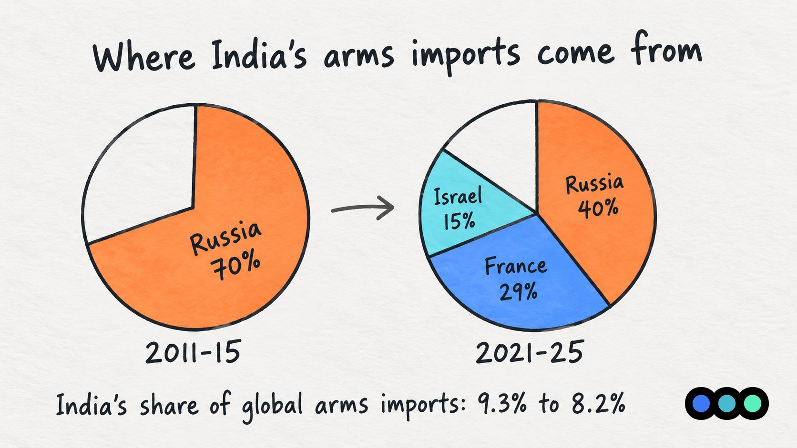
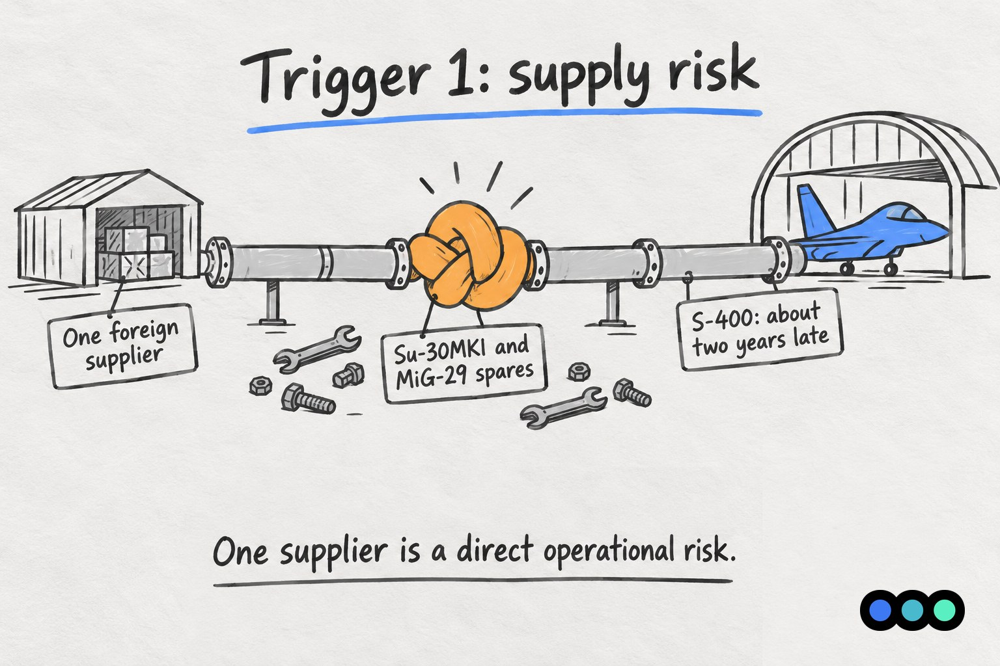
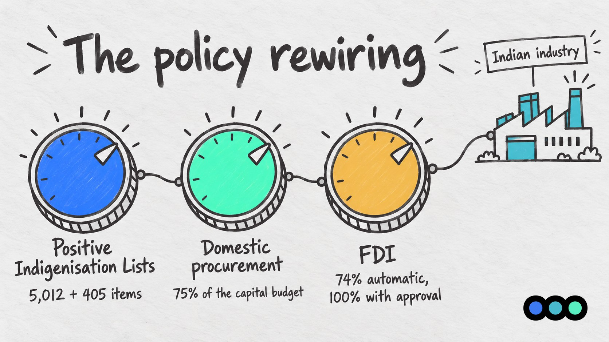
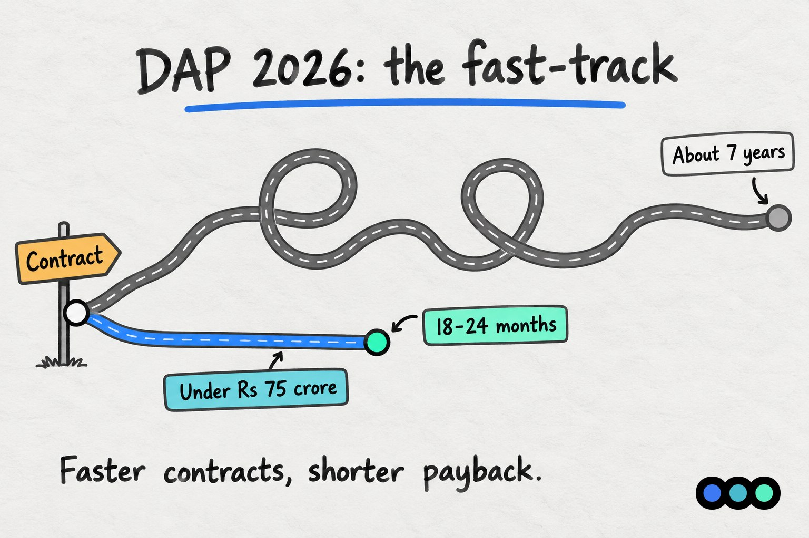

Prologue Blog · Sector Insights
From Biggest Importer to Builder
How Geopolitics Is Rewiring India's Defence Industry

India is still the world's second largest arms importer. But the gap between what it buys and what it builds is closing faster than ever. Defence production hit a record Rs 1.78 lakh crore in FY26, exports crossed Rs 38,000 crore, and Russia's share of Indian arms imports has fallen to its lowest in decades.
This shift did not come from a single announcement. Geopolitics supplied the urgency, and a series of policy reforms between 2018 and 2026 rewired the economics of Indian defence procurement.
Where India started
India accounted for 8.2% of global arms imports in 2021-25, second only to Ukraine, down from 9.3% in 2016-20. SIPRI links the decline partly to India's growing ability to build weapons at home. Russia's share of Indian imports has dropped from 70% in 2011-15 to 40% in 2021-25, with France (29%) and Israel (15%) making up most of the rest.

Trigger 1: The Russia-Ukraine war exposed supply risk
- In March 2023, the Indian Air Force told Parliament that a planned major delivery from Russia would not happen because of the war.
- The IAF relies on Russia for Su-30MKI and MiG-29 spares, the core of its fighter fleet.
- The final two S-400 squadrons, from a $5.4 billion 2018 deal, slipped by about two years.
The lesson: depending on one foreign supplier for spares and munitions is a direct operational risk.

Trigger 2: Modern wars changed what matters
Conflicts from Ukraine to West Asia showed that cheap drones, counter-drone systems, electronic warfare and ammunition stocks can decide outcomes as much as high-end jets. They also set off a global scramble for munitions and components. These are areas where Indian companies can build quickly and at lower cost.
The policy rewiring
Positive Indigenisation Lists. These lists name defence items that can no longer be imported and must be bought from Indian manufacturers. Five lists covering 5,012 DPSU items were notified, and a sixth added 405 more in August 2026. The SRIJAN portal has helped indigenise over 15,700 items. This created guaranteed demand for products Indian industry could make but never got orders for.
75% domestic procurement. The government reserves 75% of the capital acquisition budget for Indian companies, around Rs 1.39 lakh crore in FY27, within a total defence budget of Rs 7.85 lakh crore.
FDI liberalisation. Foreign investment in defence is allowed up to 74% under the automatic route and 100% with approval, enabling joint ventures with foreign technology partners. By March 2026, 834 defence industrial licences had been issued, supporting about 500 licensed defence companies, 16 DPSUs and nearly 17,000 MSMEs.

Operation Sindoor: the proof of concept
In May 2025, the policy push got its strongest validation. Many of the headline weapons in Operation Sindoor were Indian: Akash missiles and the Akashteer air defence network, BrahMos, Pinaka rockets, SkyStriker drones from Alpha Design Technologies, and Nagastra loitering munitions from Solar Industries. Imported systems still played a major role, but domestic equipment proved itself in real combat. The military establishment saw that Indian companies, some under a decade old, could build what India needed.
DAP 2026: the 700-page rewrite
In February 2026, the Ministry of Defence released a rewrite of the Defence Acquisition Procedure. Three changes stand out:
- Buy Indian-IDDM as the default. The top procurement lane now goes to companies that design and build on Indian IP, not those assembling imported kits. R&D and domestic content have become a real procurement advantage.
- Low-Cost Capital Acquisition fast-track. Purchases under Rs 75 crore get decisions at lower levels and shorter trials, cutting cycles from about 7 years to 18-24 months. Faster contracts mean shorter payback periods, which makes the business case for defence startups far stronger.
- Trial cost compensation. Vendors who clear trials but lose the contract are compensated up to 10% of the L1 cost or Rs 10 crore, whichever is lower. Showing up and performing no longer ends in a total loss.

The results so far
| Metric | Earlier | Latest |
|---|---|---|
| Defence production | Rs 43,746 cr (FY14) | Rs 1.78 lakh cr (FY26) |
| Private sector share of production | 22% (FY25) | 24%, about Rs 42,000 cr (FY26) |
| Defence exports | - | Rs 38,424 cr (FY26, record) |
| Russia's share of India's arms imports | 70% (2011-15) | 40% (2021-25) |
| India's share of global arms imports | 9.3% (2016-20) | 8.2% (2021-25) |
Production grew 15.6% in FY26 alone. The next targets are over Rs 2 lakh crore this year and Rs 3 lakh crore by 2029.
The bottom line
India has not stopped importing, and will not for years in high-end platforms. But the direction is set. Supply shocks abroad, combat use at home and a reworked procurement system have made indigenous production a security requirement, not an aspiration. The next test is whether India can move beyond assembly and own the core technology inside its weapons.
Sources
- Ministry of Defence / PIB: Defence production soars to a record Rs 1.78 lakh crore in FY 2025-26
- SIPRI Arms Transfers Database
- The Week: India still top arms importer, but Atmanirbharta paying off (SIPRI 2026)
- Dawn/Reuters: Russia cannot meet India arms deliveries because of Ukraine war
- The Defense Post: Russia delays S-400 delivery to India by two years
- PIB: Operation Sindoor, the rise of Aatmanirbhar innovation
- WION: Indigenous weapons used in Operation Sindoor
- Aviation Defence Universe: Sixth Positive Indigenisation List
- Janes: India's defence production value rises to INR 1.78 trillion
- JSA Prism: Defence Acquisition Procedure 2026
- Indian Defence News: Low-Cost Capital Acquisition in DAP 2026
- Raksha Mantri on production targets, July 2026
Building for India's defence?
Defence and deeptech founders are raising into a market that has changed fast. Investors will want to see where you sit in it: what you design on Indian IP, which procurement lane you can win in, and how long your contracts take to pay back.
Prologue works with founders before they raise, on the pitch deck, the financial model and the story investors will test. If you are building in defence or deeptech and planning a round, talk to us.

About Karan Shah
Karan Shah is a Deal Manager at Earlyseed Ventures, helping back India's next wave of founders across defence, deeptech, SaaS, MedTech and consumer brands. Karan brings about six years in venture capital and deal-making, with a knack for spotting promising startups early and getting deals over the line, from first pitch to final signature.